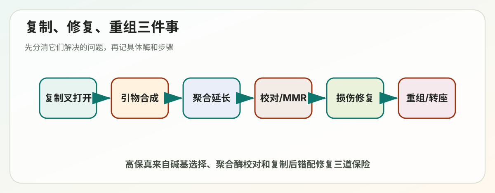
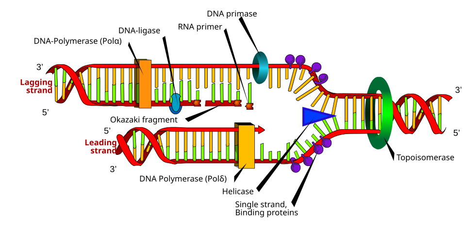

Lecture 05
第5讲学习讲义：DNA Replication, Repair, and Recombination


对应课件：Lecture_5_DNA_Replication_Repair_and_Recombination.pdf
这一讲是分子生物学的硬骨头之一，但它的主线其实很清楚：DNA 既要被准确复制，又会不断受到损伤，所以细胞必须一边复制，一边校对，一边修，一边在必要时重组。
这讲的核心问题
- DNA 复制为什么能又快又准？
- 复制过程中需要哪些关键酶？
- DNA 会受到哪些损伤？
- 细胞有哪些修复路径？
- 重组和转座为什么既危险又重要？
一、先理解“突变”是什么
课件开头先讲 mutation，这不是随便铺垫，而是在告诉你后面的复制和修复为什么重要。
突变的定义：
- DNA 序列发生永久改变。
突变有两面性：
- 它提供进化原材料。
- 它也可能导致疾病，尤其是癌症和遗传病。
课件提到突变率极低，大约可达每 10^9 个碱基出现 1 个错误量级。这说明细胞的复制和修复系统极其高效。
二、生殖系突变和体细胞突变要分开
1. 生殖系突变 germ-line mutation
发生在产生配子的谱系里。
后果：
- 可以传给下一代。
- 因而与家族性遗传病密切相关。
2. 体细胞突变 somatic mutation
发生在身体普通细胞中。
后果：
- 一般不会传给后代。
- 但可在个体内部积累，导致肿瘤等问题。
这一区分很重要，因为考试常问“为什么某些突变会遗传，某些不会”。
三、DNA 复制从哪里开始理解：复制叉 replication fork
你一看到复制，就先在脑子里画出复制叉。
复制叉就是双链 DNA 被打开后，左右两侧新链正在合成的分叉结构。
在这个位置上，至少有几类关键蛋白协同工作：
- DNA helicase：解旋。
- SSB 蛋白：稳定单链，防止重新配对。
- Primase：合成 RNA 引物。
- DNA polymerase：延长新链。
- DNA ligase：连接缺口。
- Topoisomerase：解决缠绕和超螺旋问题。
四、为什么 DNA 聚合酶不能从零开始
课件专门强调：DNA polymerase does not synthesize de novo。
意思是：
- DNA 聚合酶不能自己凭空开始。
- 它必须拿到一个已有的 3'-OH 末端，才能继续往后加核苷酸。
这就是为什么要先有引物 primer。
引物一般是短 RNA，由 primase 合成。
五、前导链和后随链：理解复制方向的关键难点
DNA 两条模板链是反向平行的，而 DNA 聚合酶只能按 5' -> 3' 方向合成新链，这就带来了不对称。
1. 前导链 leading strand
特点：
- 朝着复制叉前进方向连续合成。
- 通常只需要一个引物。
2. 后随链 lagging strand
特点：
- 合成方向与复制叉推进方向相反。
- 只能一段一段合成。
- 每一段都要先有新引物。
这些短片段叫 Okazaki fragments 冈崎片段。
3. 为什么后随链是分段的
不是因为它“不重要”，而是因为酶的方向性限制了它只能采用这种折中方案。
这正是初学者最容易理解错的地方。
六、复制相关关键酶各自干什么
1. Helicase 解旋酶
作用：
- 打开双链 DNA。
- 让模板链暴露出来。
2. SSB 单链结合蛋白
作用：
- 防止单链重新退火。
- 防止单链形成不合适的二级结构。
- 保护单链不被降解。
3. Primase 引物酶
作用：
- 合成短 RNA 引物。
- 为 DNA 聚合酶提供 3'-OH 起点。
4. DNA polymerase DNA 聚合酶
作用：
- 以模板为指导合成 DNA。
- 负责大部分复制延长。
5. Sliding clamp 滑动夹
课件提到 sliding ring holds polymerase。
作用：
- 把 DNA 聚合酶稳定地“扣”在 DNA 上。
- 提高聚合酶连续合成能力，也就是 processivity。
6. DNA ligase 连接酶
作用：
- 封闭 DNA 骨架中的缺口。
- 把冈崎片段最终连接成完整链。
7. Topoisomerase 拓扑异构酶
作用：
- 缓解前方过度缠绕和超螺旋。
- 防止 DNA 打结和缠死。
如果没有拓扑异构酶，复制叉前方会越拧越紧，复制无法继续。
七、复制为什么这么准确：三道保险
课件提到三种 proofreading / correction 机制。你可以把复制高保真理解为三道防线。
1. 正确碱基选择
第一道防线来自聚合酶活性位点本身：
- 配对不对，化学几何结构会不匹配。
- 不匹配的碱基不容易被高效加入。
2. 聚合酶校对 proofreading
很多 DNA 聚合酶具有 3' -> 5' 外切酶活性。
作用：
- 如果刚刚加错了一个碱基，聚合酶能倒退把错的切掉。
- 然后重新加正确的。
3. 错配修复 mismatch repair
如果错误逃过了前两道，还可以在复制后被识别并修复。
这三层叠加，才把错误率压到很低。
八、错配修复 mismatch repair：复制后还要继续查错
课件提到 strand-directed mismatch repair。
它的核心难点是：
- 细胞必须知道哪一条是“新链”，哪一条是“旧链”。
- 否则看到一个错配时，不知道该改哪边。
所以错配修复的关键逻辑是：
- 识别刚复制完的新链特征。
- 切掉带错碱基的新链片段。
- 再重新补上。
九、原核和真核复制：相似但更复杂
1. 相似之处
- 都需要解旋、引物、聚合、连接、拓扑调节。
- 都遵循模板指导和 5' -> 3' 合成方向。
2. 真核更复杂的原因
- 基因组更大。
- 染色体是线性的。
- DNA 被核小体包装。
- 复制起点更多。
- 细胞周期调控更严格。
十、复制起点 origin：复制不是随便从哪里开始
1. 细菌复制起点
细菌通常起点较少，经典情况是一条环状染色体从单一主要起点开始双向复制。
2. 真核复制起点
真核基因组太大，必须有很多起点同时启动。
否则复制一个基因组要花太久，细胞周期根本无法承受。
3. 起点启动必须受控
不是所有潜在起点都会在每轮复制中被激活。
细胞必须保证：
- 每段 DNA 在一个细胞周期里只复制一次。
- 不能漏，也不能重复复制。
十一、核小体如何在复制后恢复
真核 DNA 复制不是在裸 DNA 上进行，而是在染色质背景中完成。
复制时必须处理两件事：
- 原有核小体被暂时拆开或重排。
- 新复制出来的 DNA 要重新装配核小体。
这件事很重要，因为它关系到：
- 染色质结构如何恢复。
- 某些表观遗传信息如何被延续。
十二、末端复制问题与端粒
线性染色体有一个经典难题：
- 当 RNA 引物被去除后，最末端那一段可能无法被普通 DNA 聚合酶完全补回。
这叫末端复制问题。
如果完全不解决，会导致：
- 染色体每复制一次就更短一些。
1. 端粒 telomere
端粒是染色体末端的重复序列与相关蛋白结构。
作用：
- 保护末端。
- 缓冲复制损失。
2. 端粒酶 telomerase
课件明确说 telomerase is a reverse transcriptase。
意思是：
- 它携带 RNA 模板。
- 以这个 RNA 为模板延长 DNA 末端。
这是分子生物学里很漂亮的一个机制。
3. 端粒与衰老、疾病
端粒过短会和：
- 细胞衰老。
- 增殖能力下降。
- 某些疾病。
相关。
而癌细胞常常通过维持端粒来获得更强的无限增殖能力。
十三、DNA 为什么总在受损
DNA 并不是放在那里就永远安全。课件列出的损伤来源包括：
- 氧化。
- 水解。
- 甲基化等化学修饰。
- 紫外线诱导的嘧啶二聚体。
- 双链断裂。
这说明：
- DNA 修复不是偶尔需要。
- 而是细胞日常生存的必需功能。
十四、常见 DNA 损伤类型
1. Depurination 脱嘌呤
碱基丢失，导致 DNA 上出现无碱基位点。
2. Deamination 脱氨基
例如胞嘧啶脱氨变成尿嘧啶，会改变配对特性。
3. Oxidation 氧化损伤
活性氧可攻击碱基或骨架，产生错误配对或断裂。
4. Pyrimidine dimer 嘧啶二聚体
紫外线可导致相邻嘧啶形成异常共价连接，典型如 TT 二聚体。
5. Double-strand break 双链断裂
这是最危险的损伤之一，因为两条链都断了，模板信息缺失更严重。
十五、碱基切除修复 BER：修小而精确的损伤
Base excision repair 适合处理：
- 单个异常碱基。
- 小范围化学修饰。
课件里的 BER key enzymes
DNA glycosylase：先识别异常碱基，并切断“碱基-脱氧核糖”之间的键，把坏碱基去掉，留下 AP site。AP endonuclease：识别无碱基位点 AP site，并在 DNA 骨架上切开一个入口。DNA polymerase：以对侧正常链为模板，把缺掉的正确核苷酸补回去。DNA ligase：把最后残留的 nick 封口，恢复连续的磷酸二酯骨架。
你可以把这 4 个酶记成一条顺序链：
- glycosylase 先“拆坏碱基”。
- AP endonuclease 再“开骨架入口”。
- polymerase 负责“补正确碱基”。
- ligase 最后“封口收尾”。
基本步骤可理解为：
- 先识别并去掉坏碱基。
- 产生缺口。
- 再补上正确核苷酸。
- 最后封口。
为什么这条路高效：
- 损伤范围小。
- 不需要大规模切除。
十六、核苷酸切除修复 NER：处理“体积大、扭曲 DNA”的损伤
Nucleotide excision repair 常处理：
- 紫外线导致的嘧啶二聚体。
- 明显扭曲双螺旋的损伤。
课件里的 NER key enzymes
Endonuclease：在损伤位点两侧切开 DNA，把带损伤的一小段寡核苷酸整体切除。DNA polymerase：以对侧完整链为模板，把被切掉的那一段重新补回去。DNA ligase：把最后残留的 nick 封口，恢复连续 DNA 骨架。
你可以把这 3 个酶记成一条顺序链：
- endonuclease 先“把坏的一小段挖掉”。
- polymerase 再“按模板重铺”。
- ligase 最后“封边收尾”。
NER 的逐步流程
1. 先识别哪一段 DNA 的双螺旋形状被明显扭曲。 2. 在损伤位点两侧切开，而不是只切掉单个坏碱基。 3. 受损寡核苷酸整段被移除。 4. DNA polymerase 以对侧正常链为模板补回缺失片段。 5. DNA ligase 封口，修复完成。
为什么 NER 特别适合嘧啶二聚体这类损伤
因为这类损伤的关键问题往往不是“某个碱基化学基团稍微不对”，而是它把整段双螺旋的几何形状搞坏了。
所以 NER 的识别重点常常是：
- DNA 是否局部鼓包、弯折或扭曲。
- RNA polymerase 是否在这里被卡住。
这也就是课件下一页讲 transcription-coupled DNA repair 的原因：
- 如果某段正在被转录的 DNA 因损伤让 RNA polymerase 停住，细胞会优先把修复系统招到这里。
- 这相当于“正在使用的重要区域优先维修”。
核心逻辑：
- 不只去掉一个碱基。
- 而是把损伤周围一小段核苷酸一起切掉。
- 再重新填补。
你可以把 BER 和 NER 对比着记：
- BER 修单个坏零件。
- NER 把整小段坏掉区域挖掉重铺。
十七、双链断裂修复：NHEJ 和 HR
1. 非同源末端连接 NHEJ
特点：
- 直接把断端重新接起来。
- 快。
- 不依赖长模板。
- 但容易引入小的缺失或插入。
2. 同源重组 HR
特点：
- 需要同源 DNA 作为模板。
- 通常更准确。
- 常利用姐妹染色单体。
因此：
- NHEJ 更像“先抢救接上”。
- HR 更像“照着正确版本精修”。
十八、DNA 损伤与细胞周期检查点
课件提到 DNA damage occurs, cell cycle is arrested。
这说明细胞不是一边坏着一边硬往下分裂，而是会：
- 暂停周期。
- 启动修复。
- 修不好时触发更激烈应答，甚至程序性死亡。
这对于抑制肿瘤非常重要。
十九、同源重组不仅用于修复，也用于减数分裂
HR 在减数分裂里特别关键，因为它会带来：
- 同源染色体之间的交换。
- 遗传多样性增加。
课件提到 crossover 和 Holliday junction，这属于经典重组模型。
Holliday junction 可以怎么理解
它是重组中形成的交叉中间体。
它后续的切解方式不同，会产生不同重组结果。
你不必一开始背所有中间体名称，但要知道：
- 重组不是魔法。
- 它是有明确物理中间结构的分子过程。
二十、转座 transposition：基因组里的“可移动元件”
这一部分很多人觉得偏门，其实很重要。它告诉你：
- 基因组不是完全静止的书本。
- 里面有些片段会移动、复制自己、插入新位置。
1. DNA-only transposons
通常通过转座酶介导“剪切并粘贴”或相关机制移动。
2. 逆转座子 retrotransposons
通过 RNA 中间体复制自己，再逆转录回 DNA 插入基因组。
这类元件和逆转录病毒在机制上有相似性。
3. 为什么转座重要
- 可造成插入突变。
- 可重塑基因组结构。
- 可推动进化。
- 也可能带来疾病风险。
二十一、保守位点特异性重组
课件最后提到 phage λ 和 Cre recombinase。
这类重组与一般 HR 不同，其特点是：
- 在特定短序列位点发生。
- 不依赖大范围同源性。
- 通常由专门重组酶催化。
Cre-lox 系统后来被广泛用于基因工程和条件敲除，是现代分子生物学的重要工具。
二十二、把这一讲串成一句话
DNA 复制系统通过复制叉、多种酶协同和多层校对机制实现高保真复制；DNA 损伤则通过 BER、NER、NHEJ、HR 等路径被修复；与此同时，重组和转座不断重塑基因组，既维持生命，也推动进化，并在失控时导致疾病。
二十三、常见误区
- “DNA 复制就是聚合酶一路往前加碱基”太简单。真正过程依赖多种酶协作。
- “后随链不如前导链重要”是错的，两条链都必须完整复制。
- “修复都是把错的碱基直接改回来”不对，很多修复要先切除再重建。
- “重组只会在减数分裂发生”不对，DNA 修复中也大量用到。
- “转座子都是没用垃圾”不准确，它们既能致害，也深刻塑造基因组演化。
二十四、你必须会的关键词
- Replication fork：复制叉。
- Primer：引物。
- Leading strand：前导链。
- Lagging strand：后随链。
- Okazaki fragment：冈崎片段。
- Proofreading：校对。
- Mismatch repair：错配修复。
- Telomere：端粒。
- Telomerase：端粒酶。
- BER：碱基切除修复。
- NER：核苷酸切除修复。
- NHEJ：非同源末端连接。
- HR：同源重组。
- Holliday junction：Holliday 交叉结构。
- Transposon：转座子。
二十五、自测题
1. 为什么后随链必须分段合成？
答题关键：
- DNA 聚合酶只能 5' -> 3' 合成。
- 两条模板链方向相反。
2. 复制高保真为什么不只是聚合酶本身很准？
答题关键：
- 还有校对和错配修复两层保障。
3. BER 和 NER 的主要差别是什么？
答题关键：
- BER 处理单个异常碱基。
- NER 切掉一段受损核苷酸。
4. NHEJ 和 HR 哪个更准确，为什么？
答题关键：
- HR 更准确，因为有同源模板。
5. 端粒酶为什么特殊？
答题关键：
- 它是逆转录酶，携带 RNA 模板来延长 DNA 末端。
二十六、考前速记版
- 复制叉是复制理解核心图景。
- 引物提供 3'-OH，聚合酶不能从零开始。
- 前导链连续，后随链分段。
- 复制准确性来自碱基选择、校对和错配修复。
- 端粒和端粒酶解决线性染色体末端复制问题。
- BER 修小损伤，NER 修扭曲双螺旋的大损伤。
- 双链断裂主要靠 NHEJ 和 HR。
- 重组和转座既能维持基因组，也能重塑基因组。
二十七、深入扩展：把 DNA 复制按时间顺序完整走一遍
如果你总觉得 DNA replication 很碎，通常是因为你记住了很多酶名，但没有把它们放回“时间顺序”。最稳的学法，是按事件发生顺序来记。
Step 0：先选定复制起点 origin
细胞不会在整条 DNA 上随便找一个地方开工，而是先在复制起点招募起始蛋白。
在细菌中，经典例子是 oriC。
在真核中，起点数量很多，而且不同起点会在 S 期不同时间激活。
这一阶段的任务不是马上复制，而是先回答两个问题：
- 这段 DNA 能不能作为起点。
- 这一轮细胞周期里它是否已经复制过。
Step 1：起始蛋白结合起点并装载解旋酶
起点一旦被识别，下一步就是把“开链机器”放上去。
细菌中经典参与者包括：
DnaA：识别并结合起点 DNA。DnaB：主要解旋酶。DnaC：帮助把 DnaB 装到 DNA 上的装载因子。DnaG：primase，引物酶。
真核中逻辑类似，但分工更复杂：
ORC识别起点。Cdc6、Cdt1协助装载MCM解旋酶复合物。- 真正进入 S 期后再把这些“许可好的”起点激活。
这里你要抓住一个关键概念：
- 许可 licensing 和 激活 firing 不是一回事。
- 许可是“这地方可以复制”。
- 激活是“现在真的开始复制”。
这样设计的好处是防止一段 DNA 在同一个细胞周期被重复复制。
Step 2：解旋酶打开双链 DNA
解旋酶 helicase 利用 ATP 水解提供能量，把双链 DNA 局部打开。
这一步的重要性常被低估。DNA 双螺旋很稳定，不是自己就会在大范围自然打开的，所以必须有专门分子马达完成这件事。
解旋之后，DNA 前方会出现两个问题：
- 模板链暴露后容易重新配对。
- 双螺旋被强行拉开后，前方会积累扭转张力。
因此，解旋酶一开工，其他辅助蛋白马上就得跟上。
Step 3：单链结合蛋白 SSB / RPA 稳定模板单链
单链 DNA 暴露后很不稳定，会有三种风险：
- 两条链重新配对。
- 单链自己形成发夹等二级结构。
- 单链更容易受损或被核酸酶攻击。
这时单链结合蛋白就上场了。
原核里常叫 SSB，真核里常见对应物是 RPA。
它们的作用可以概括为：
- 把裸露单链“摊平、保护、稳定”。
- 让复制酶能顺畅读取模板。
Step 4：拓扑异构酶处理前方超螺旋
只要后面的 DNA 被打开，前面的 DNA 就会越拧越紧。这像你拧麻花的一端，另一端张力会越来越大。
如果不处理，会导致：
- 复制叉前方扭转张力不断累积。
- DNA 出现严重超螺旋。
- 复制机器被迫停下。
拓扑异构酶 topoisomerase 的工作就是临时切开 DNA、释放张力、再把 DNA 接回去。
Topoisomerase I 和 II 的直觉理解
粗略理解可以这样记：
- Type I：通常切开一条链，缓解部分扭转压力。
- Type II：通常切开两条链，让另一段 DNA 通过，更擅长解决严重缠绕和分离问题。
这里你不必一开始背所有分类细节，但一定要知道它们解决的是 DNA 的“几何和拓扑问题”，不是碱基配对问题。
Step 5：primase 合成 RNA 引物
DNA polymerase 自己不能 de novo 起始，所以需要一个已有的 3'-OH。
这个 3'-OH 由引物提供。引物一般是短 RNA，由 primase 合成。
为什么 primase 做的是 RNA，不是 DNA
一个直观解释是：
- primase 本质上更像 RNA 聚合酶家族成员。
- RNA 聚合酶更适合做“从零开始”的低保真起始工作。
- DNA polymerase 更高保真，但代价是必须站在一个已有末端上才能继续延长。
也就是说，细胞把“起步”交给一个更灵活的酶，把“高保真长距离复制”交给更严格的 DNA 聚合酶。
为什么 RNA primer 常常大约是 10 nt
课件里写的是 ~10 nt。课件没有展开这个问题，下面是基于分子机制的合理解释，你可以当作“理解型补充”，不是必须死背的标准答案。
一般认为，之所以常是大约 10 nt 左右，是几个因素平衡后的结果：
- 太短则不稳定。RNA-DNA 杂交如果只有 2 到 3 个碱基，和模板的配对不够稳，DNA polymerase 不容易可靠接手。
- 需要足够长度来提供稳定的 3'-OH 末端。引物不只是“有个头”就行，它要在复制叉动态环境中足够稳固。
- 太长又不划算。因为 RNA primer 后面还要被移除，如果引物做得太长，后续切除和补平成本更高。
- primase 本身是低保真、低 processivity 的起始酶。它不适合长距离合成，做一个短而够用的引物最合理。
所以你可以把 10 nt 理解成一个工程学上的折中：
- 足够短，便于之后清除。
- 又足够长，能稳定配对并让 DNA polymerase 接手。
要注意的是：不同生物和不同体系里，引物长度不是绝对固定 10 nt，而是“一个大致短小但够用的范围”。
Step 6：DNA 聚合酶接手延长新链
引物一旦提供 3'-OH，真正的大规模复制就由 DNA polymerase 接手。
这一步最核心的规则只有一条：
- 新链永远按
5' -> 3'方向延长。
你必须把这条规则刻进脑子里，因为前导链和后随链的一切差异都从这里来。
Step 7：滑动夹 sliding clamp 提高 processivity
如果没有辅助装置，普通 DNA polymerase 做一会儿就可能掉下来。
滑动夹像一个套在 DNA 外面的环，把 polymerase 稳稳固定在模板附近。
结果是：
- polymerase 不容易中途脱落。
- 可以连续合成更长的新链。
- 整个复制效率显著提高。
原核里典型滑动夹是 β clamp，真核里对应常见的是 PCNA。
Clamp loader 是什么
光有环还不够，环得被正确装到 DNA 上。
所以还有一类 ATP 驱动装载因子，常叫 clamp loader。
真核里常见的是 RFC。它的作用可以理解成：
- 暂时把夹子打开。
- 套到 DNA 合适位置。
- 再让它闭合并稳定工作。
二十八、前导链和后随链为什么会分工不同
这是复制机制的核心理解点。
1. 两条模板链方向相反
由于双链 DNA 是反向平行的，所以一条模板朝向复制叉时，另一条模板方向必然相反。
2. polymerase 只能 5' -> 3' 合成
这就导致：
- 一条新链可以顺着复制叉前进方向连续合成。
- 另一条新链必须“退一步、合一段、再退一步、再合一段”。
3. 前导链 leading strand
特点：
- 只需一次起始。
- 可比较连续地被延长。
4. 后随链 lagging strand
特点：
- 要反复起始。
- 每一段都要一个新引物。
- 最终形成很多冈崎片段 Okazaki fragments。
5. 为什么细菌和真核的冈崎片段长度不同
课件提到：
- 真核大约 100 到 200 nt。
- 细菌通常更长，可达 1000 到 2000 nt 量级。
常见解释是：
- 真核 DNA 被核小体包装，片段长度和核小体尺度接近。
- 真核复制叉前进更慢，装配和重塑约束更多。
- 原核基因组更紧凑，复制速度更快，冈崎片段通常更长。
所以这不是“随便选的长度”，而是与 DNA 包装和复制动力学都有关。
二十九、后随链的每个冈崎片段是怎么成熟的
后随链最容易出考试大题，因为它包含多个步骤。
一个冈崎片段从开始到成熟，大致经历：
1. primase 做出 RNA primer。 2. DNA polymerase 从 primer 的 3' 端开始延长。 3. polymerase 遇到前一个片段时停止或切换。 4. RNA primer 被移除。 5. 空缺被 DNA 补上。 6. 最后一个“糖-磷酸骨架缺口”由 ligase 封口。
原核里谁负责去掉 RNA primer
课件只说有“an enzyme that degrades RNA primers”，零基础阶段你可以这样记：
- 需要有活性能把 RNA primer 去掉。
- 细菌中 DNA polymerase I 经典地兼顾去除引物和补 DNA 的工作。
真核里谁做这件事
真核更复杂，常见参与者包括：
RNase H：去除 RNA-DNA 杂交中的 RNA 部分。FEN1：切除引物处理过程中形成的 flap 结构。DNA ligase I：封口。
这也是为什么你会感觉真核复制总比原核多一层复杂性。
三十、DNA ligase 到底在做什么
初学者常把 ligase 误以为是“把 DNA 对齐一下”。其实它做的是非常具体的化学工作：
- 它催化相邻 DNA 片段之间磷酸二酯键形成。
也就是说：
- 片段之间碱基配对正确不等于骨架已经闭合。
- 只要还存在 nick，也就是一侧有 3'-OH、另一侧有 5'-phosphate 但未形成共价键，就还不算完整 DNA 链。
ligase 的任务，就是把这个最后的共价连接补上。
为什么 ligase 很关键
因为如果不封口：
- DNA 主链并不连续。
- 机械强度和遗传稳定性都会有问题。
- 这些断口也容易成为后续损伤源。
三十一、为什么复制高保真，不只是因为“配对规则正确”
课件列了 3 个层级，这里把它展开。
第一层：模板配对本身就有几何选择性
A-T、G-C 的几何形状更适合活性位点。
错配常常会导致：
- 氢键模式不对。
- 立体几何不对。
- 聚合速度下降。
所以第一层筛选来自化学和结构本身。
第二层：3' -> 5' 外切酶校对 proofreading
很多复制型 DNA polymerase 有两个功能位点：
- 一个负责加核苷酸。
- 一个负责切掉刚加错的核苷酸。
当错误配对发生时，链末端几何异常，聚合反应变慢，末端更容易转移到外切酶位点，被切掉后再返回聚合位点继续正确合成。
这相当于：
- 写字时先看一眼，发现刚写错马上擦掉重写。
第三层：错配修复 mismatch repair
如果错误仍然逃过聚合酶校对，复制后还可以被补救。
这是第三道保险。
三十二、为什么 3' -> 5' 外切酶活性这么重要
课件有一页写到没有 proofreading 的 polymerase 保真性差很多。你可以这样理解：
- 模板选择只能避免大部分错误，但不能避免全部。
- 一旦错配已经被接到链末端，如果没有回退切除机制，错误就会被直接保留下来。
所以 proofreading 不是“锦上添花”，而是把错误率再压几个数量级的关键步骤。
三十三、错配修复到底怎么知道哪条链是新链
这是 mismatch repair 最值得理解的地方。
1. 细菌中的链识别
课件提到：
- 旧链在
GATC位点的A上已有甲基化。 - 新链刚复制出来时甲基化暂时滞后。
于是细胞可以推断：
- 没甲基化那条更可能是新链。
- 错配更可能来自它。
这就是为什么细菌会有“refractory period”。
2. 真核中的链识别
真核没有照搬细菌的那套 GATC 甲基化标记。课件提示新链上存在 nick。
你可以这样理解：
- 刚复制完成的新链，尤其后随链，因为有很多片段连接过程，天然更容易留下一些可识别的暂时性不连续信息。
- 修复系统可利用这些新链特征定向修复。
3. 错配修复的大致流程
1. 识别错配。 2. 判断哪条是新链。 3. 从新链合适位置切开。 4. 去除包含错配的一段 DNA。 5. 由 DNA polymerase 按旧链模板重新补上。 6. ligase 封口。
三十四、细菌复制为什么能有“refractory period”
课件专门提到这一点，说明它很重要。
所谓 refractory period，可以理解成：
- 一段刚复制完的 DNA 不会立刻再次启动复制。
这很有价值，因为它同时帮助两件事：
- 给 mismatch repair 留出区分新旧链的时间窗口。
- 防止同一轮细胞周期里复制起点过早再次启动。
所以 DNA 甲基化在细菌里既参与修复，也参与复制时序控制。
三十五、真核复制为什么慢得多
课件说真核复制速度大约是原核的十分之一。
原因不是因为真核酶“更差”，而是因为真核面临的问题更复杂：
- DNA 包装成核小体，需要边复制边拆装。
- 基因组更大，调控更严格。
- 染色体是线性的。
- 染色质环境有开放区和异染色质区差异。
- 复制与细胞周期检查点耦联更紧密。
换句话说，真核复制像在“繁忙城市里施工”，原核更像在“空旷公路上施工”。
三十六、真核为什么需要这么多复制起点
课件里给了数量级：
- 酵母约 400。
- 人类约 10,000。
原因非常直接：
- 人类基因组太大。
- 真核复制叉又相对较慢。
- 如果只靠一个起点，复制根本赶不上一个 S 期。
为什么起点要分批启动
课件说 origins are activated in clusters and at different times。
这意味着：
- 细胞并不会一口气把所有起点同时点燃。
- 而是按一定时序分批进行。
这样做可以：
- 平衡资源使用。
- 减少复制压力。
- 与染色质状态和基因表达程序协调。
为什么常染色质早复制，异染色质晚复制
常见理解是：
- 常染色质更开放，起点更容易被激活。
- 异染色质更压缩，相关调控更保守，常在 S 期较晚阶段复制。
这条规律也说明复制时序本身就是染色质状态的一个读出。
三十七、复制过程中核小体怎么处理
课件第 26 页很关键，但容易被忽略。
复制叉前进时，核小体不能原封不动挡在前面，所以必须：
- 暂时拆开旧核小体。
- 在新 DNA 后方重新装回核小体。
课件提到：
- 旧的 H2A-H2B 二聚体更容易拆开。
- 旧的 H3-H4 二聚体更容易保留并重新分配。
- 新旧组蛋白在伴侣蛋白帮助下混合装配到子链上。
为什么这件事重要
因为它不仅关系到“包装恢复”，还关系到“表观遗传信息如何延续”。
如果老组蛋白带有特定修饰，它们被分配到新染色质后，就可能帮助新组蛋白恢复原来的修饰模式。
三十八、端粒问题到底难在哪里
你要真正理解末端复制问题，得先意识到：
- DNA polymerase 只能从已有 3'-OH 延长。
- 后随链末端最后一个 RNA primer 去掉以后，前面没有更上游的 3'-OH 可以再补。
这意味着线性染色体的末端会面临“最后一小段没法普通方式补齐”的问题。
为什么环状染色体没有这个问题
因为细菌等很多原核生物的染色体是环状的，没有真正“末端”。
所以端粒问题是线性染色体特有难题。
三十九、端粒酶为什么是 reverse transcriptase
端粒酶内部带有 RNA 模板。它不是照外部 DNA 模板抄，而是：
- 用自己携带的 RNA 模板延长 DNA 末端。
所以它被称为逆转录酶：
- 以 RNA 为模板，合成 DNA。
端粒酶解决问题的逻辑
它并不是把原本缺的所有信息精确补回，而是：
- 在末端加上重复序列。
- 给后随链补缺留下“缓冲区”。
- 从而避免重要编码区不断丢失。
四十、为什么 DNA 用 T 而不是 U
课件第 40 页提到这是一个非常经典的思考题。
核心原因
胞嘧啶 C 很容易自发脱氨，变成 U。
如果 DNA 正常就用 U，那么当 C 脱氨变成 U 时，系统就很难区分：
- 这是“本来就该在这里的 U”。
- 还是“损伤后产生的异常 U”。
但 DNA 正常使用 T，所以：
- 一旦在 DNA 里看到 U，系统就知道这通常不对，是损伤信号。
这让修复系统更容易识别脱氨损伤。
这是生物分子设计里非常漂亮的一点。
四十一、BER 为什么适合小损伤
Base excision repair 处理的是：
- 某个碱基化学性质变了。
- 但 DNA 整体双螺旋结构没有严重扭曲。
所以 BER 的策略是“微创修理”：
1. 先由 DNA glycosylase 识别异常碱基。 2. 把这个碱基从糖上切掉，留下 AP site。 3. 再由 AP endonuclease 切开骨架。 4. polymerase 补上。 5. ligase 封口。
Flipping-out mechanism 是什么
课件第 39 页提到 flipping-out。
意思是 DNA glycosylase 不会只站在外面猜，而是：
- 把可疑碱基从双螺旋中“翻出来”。
- 放进自己的检测口袋里检查是否异常。
这是一种非常高效的局部质量检测方式。
四十二、为什么 5-methylcytosine 容易出问题
课件提到大量单碱基遗传病突变和 methylated C 有关。
原因在于：
- 普通 C 脱氨会变 U，比较容易被识别为异常。
- 5-methylcytosine 脱氨会变 T。
而 T 本来就是 DNA 正常碱基，所以：
- 修复系统更难发现它是“损伤产物”。
- 于是
CpG -> TpG类型突变更容易积累。
这就是为什么 CpG 位点常是突变热点。
四十三、NER 为什么适合 bulky lesion
Nucleotide excision repair 处理的是“大块、扭曲双螺旋”的损伤，比如紫外线造成的嘧啶二聚体。
它不像 BER 那样只换一个碱基，而是：
- 先识别局部双螺旋变形。
- 再把受损区域连同周边一小段一起切掉。
- 然后重新合成补平。
你可以这样对比 BER 和 NER
- BER：更像换一颗坏螺丝。
- NER：更像把一小块受损面板整段拆掉重装。
四十四、transcription-coupled repair 为什么重要
课件第 43 页讲到 RNA polymerase stalled at damaged site。
这个思路非常直观：
- 某段 DNA 如果正在被转录，说明这段区域对当前细胞功能很重要。
- 如果 RNA polymerase 在这里被损伤卡住，细胞会优先派修复系统来处理。
所以 transcription-coupled repair 可以理解成：
- 哪里正在用，哪里优先修。
这是一种资源优先级调配策略。
四十五、双链断裂为什么比单链损伤危险得多
在 BER 和 NER 中，另一条链通常还能作为模板。
但双链断裂 DSB 的难点在于：
- 两条链都断了。
- 局部连续性丢失严重。
- 染色体片段可能直接分离。
因此 DSB 是最危险的 DNA 损伤之一。
四十六、NHEJ 为什么叫 quick and dirty
课件直接用了这句话，很形象。
NHEJ 的核心思路是：
- 先把断端抓住，尽快接回去。
典型参与者包括：
Ku70/Ku80：先抱住断端。DNA-PK：帮助组织修复复合体。XRCC4和DNA ligase IV：参与最后连接。
为什么它“脏”
因为断端往往并不完美匹配，所以修复过程中常发生：
- 小片段删除。
- 小片段插入。
- 末端修整。
因此它快，但不够精确。
为什么细胞还要保留这条路
因为在很多情况下：
- “不完美地接回去”比“断着不管”要好得多。
尤其是在没有可用同源模板时，NHEJ 非常重要。
四十七、HR 为什么更准，但也更受限制
Homologous recombination 更准确，因为它能用同源 DNA 作模板。
但它也更受条件限制，因为系统必须：
- 找到足够相似的 DNA 模板。
- 正确进行链侵入与配对。
- 控制重组不要过量。
HR 的经典步骤可以这样记
1. DSB 发生。 2. 断端被加工，产生单链 3' 尾巴。 3. 单链在辅助蛋白帮助下寻找同源序列。 4. 发生 strand invasion 链侵入。 5. 以同源模板指导 DNA 合成。 6. 形成和解析重组中间体。 7. 完成修复。
为什么 strand invasion 难
因为 DNA 双链很稳定，想让一条单链进入另一段双链、找到正确伙伴并配对，并不是自发就很容易完成的事，需要专门重组蛋白辅助。
四十八、为什么 HR 过多和过少都不好
课件提到过多会导致 LOH，过少会修不好。
HR 太少
后果：
- 双链断裂修复不充分。
- 染色体不稳定。
- 细胞容易积累灾难性损伤。
HR 太多
后果：
- 可能在不该发生的位点重组。
- 可能造成杂合性丢失 LOH。
- 可能导致某些抑癌基因等位基因信息丢失。
所以 HR 不是“越多越好”，而是必须被精确调控。
四十九、减数分裂中的 HR 为什么是“故意制造断裂”
这和 DNA repair 里的 HR 很不一样。
在体细胞里：
- DSB 是损伤，系统要补救。
在减数分裂里：
- 某些 DSB 是程序性引入的。
- 目的是促进同源染色体之间交换。
这样做的意义是：
- 增加遗传多样性。
- 帮助同源染色体正确配对和分离。
五十、Holliday junction 为什么总被单独拿出来讲
因为它是 HR 最经典的中间体之一。
你可以把它想成：
- 两段 DNA 在交换链之后形成的四链交叉结构。
它重要在于：
- 它不是想象概念，而是真实可解析的分子中间态。
- 后续从不同方向切解，会影响最终是否形成 crossover。
所以很多教科书把 Holliday junction 当作理解重组机制的标志性结构。
五十一、转座子为什么占人类基因组这么大比例
课件提到几乎一半人类基因组和移动元件相关。
这说明：
- 基因组不是完全由“蛋白编码基因”组成。
- 很多序列来自历史上的转座和复制事件。
移动元件之所以能扩张，是因为它们某种程度上具备“自我传播”能力。
五十二、DNA-only transposons 和 retrotransposons 的根本差别
DNA-only transposons
可以粗略理解为：
- 直接以 DNA 形式移动。
- 常见 cut-and-paste 或相关机制。
Retrotransposons
可以粗略理解为：
- 先转录成 RNA。
- 再逆转录成 DNA。
- 再插回基因组。
所以 retrotransposons 常更像“复制并扩张自己”，而不只是简单搬家。
LINE 和 SINE 要怎么记
你先记住最基础的：
- 它们都是人类基因组中常见的非 LTR 逆转座子相关序列。
- LINE 通常更长，有时编码自身移动所需蛋白。
- SINE 更短，通常依赖别的元件提供机制支持。
Alu是最常见的 SINE 例子之一。
五十三、Cre recombinase 为什么是分子生物学神器
课件最后放 Cre recombinase，不只是讲机制，更是在给你后续做实验的工具基础。
Cre 的价值在于：
- 它识别特定位点
loxP。 - 只在这些位点之间进行重组。
- 可以精确删除、倒置或重排某段 DNA。
这让研究者可以做到：
- 在特定组织删掉某个基因。
- 在特定时间才删掉某个基因。
- 避免全身敲除导致的早死或复杂副作用。
五十四、这一讲最容易被问到的“为什么”
为什么 DNA polymerase 不能 de novo 起始
因为高保真 DNA polymerase 的活性位点要求一个已经配对并提供 3'-OH 的链末端，才能稳定催化下一次加成。
为什么引物用 RNA 而不是 DNA
因为起始工作更适合低保真、可 de novo 起始的 primase 来做；后续高保真复制再交给 DNA polymerase。
为什么 primer 不宜太长
因为后面必须被移除，过长会增加修复与替换成本。
为什么后随链必须分段
因为 polymerase 只能 5' -> 3' 合成，而模板方向与复制叉推进方向冲突。
为什么需要 sliding clamp
因为单靠 polymerase 自身，长距离连续复制效率不够高，容易掉链子。
为什么真核复制更慢
因为染色质包装、线性染色体、复杂调控与检查点都增加了负担。
为什么端粒酶常和癌症联系起来
因为持续维持端粒有助于细胞长期增殖，癌细胞常利用这点突破复制衰老限制。
五十五、把“复制、修复、重组”三件事真正区分开
很多初学者会混。
DNA replication
目标是：
- 在细胞分裂前，把整个基因组高保真复制一遍。
DNA repair
目标是：
- 在 DNA 受损后，尽量恢复原序列和完整性。
DNA recombination
目标或结果可以是：
- 修复双链断裂。
- 促进减数分裂交换。
- 改变 DNA 片段组合关系。
三者不是彼此孤立，而是共享很多酶学和核酸配对原则，但目的不同。
五十六、如果你要背大题，最建议的答题顺序
如果题目问“请说明 DNA replication 过程”，建议按这个顺序答：
1. 复制起点识别与起始复合体装配。 2. 解旋酶打开双链。 3. SSB 稳定单链，topoisomerase 缓解张力。 4. primase 合成 RNA 引物。 5. DNA polymerase 从 3'-OH 延长新链。 6. leading strand 连续合成，lagging strand 形成冈崎片段。 7. sliding clamp 提高 processivity。 8. 引物移除、空隙填补、ligase 封口。 9. proofreading 和 mismatch repair 保证高保真。 10. 在线性染色体中由端粒和端粒酶处理末端问题。
这样答最完整，也最有逻辑。
五十七、复制相关酶的一张“索引表”
如果你学到后面总把酶名混掉，就看这一节。
原核复制常见核心成员
DnaA：识别复制起点，启动起始过程。DnaB：主要解旋酶，打开双链 DNA。DnaC：帮助把 DnaB 装载到 DNA 上。DnaG：primase，合成短 RNA 引物。SSB：稳定单链 DNA。DNA polymerase III：原核主要复制型聚合酶，负责大部分链延长。β clamp：滑动夹，提高 Pol III 的 processivity。Clamp loader：把滑动夹装到 DNA 上。DNA polymerase I：去除 RNA primer 并补上 DNA。DNA ligase：封闭 nick，连接 DNA 片段。Topoisomerase：缓解超螺旋和缠绕。
真核复制常见核心成员
ORC：识别复制起点并参与 licensing。Cdc6 / Cdt1：协助装载 MCM。MCM：核心解旋酶复合物。RPA：真核单链结合蛋白，稳定单链模板。Pol α-primase：起始合成短 RNA-DNA primer。Pol ε：常被认为更偏前导链复制。Pol δ：常被认为更偏后随链复制。PCNA：真核滑动夹。RFC：PCNA 的装载因子。RNase H / FEN1：参与去除 RNA primer 和处理 flap。DNA ligase I：封闭 DNA 缺口。Topoisomerase I / II：处理拓扑问题。Telomerase：延长线性染色体末端重复序列。
这里最容易混的两点
1. primase 负责“起步”，主复制 polymerase 负责“长跑”。 2. ligase 不是补碱基，而是补最后那个共价连接。
如果这两点分清，复制里很多酶的分工就会突然变得很清楚。